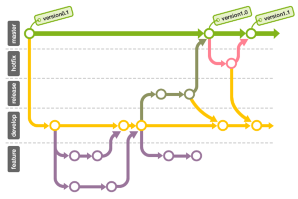
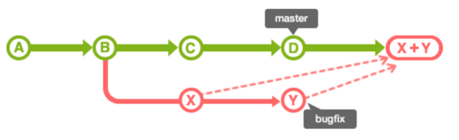
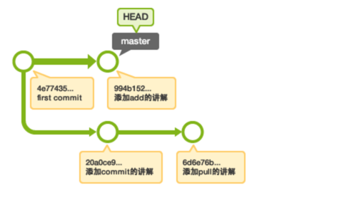
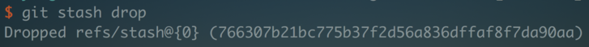

Git 常见问题总结
Table of Contents
1. 如果恢复到 git add 之前?
git reset <file>
将 file 变成 unstage 状态。
git reset
不带文件名会 unstage 所有 add 过的文件。
2. 如何更改还未提交的 commit? here
git commit --amend
另一种方式是通过交互式 rebase：
// X is the number of commits to the last commit you want to be able to edit git rebase -i HEAD~X
3. 恢复到 commit 之前，add 之后的状态? here
$ git commit -m "Something terribly misguided" (1) $ git reset HEAD~ (2) << edit files as necessary >> (3) $ git add ... (4) # 提交 commit，使用原来的 commit message $ git commit -c ORIG_HEAD (5)
如果 commit message 写错了
git commit --amend
如果多文件又有了修改，这个命令会将改动加到上个 commit 中。
另一种我认为比较好的方式
# 回到 git add 后，commit 前 git reset --soft HEAD~1 # 回到 git add 之前 git reset HEAD~1 # 这种方式比较危险。会抛弃所有的更改 git reset --hard HEAD~1
4. git reflog 恢复误删的 commit
如果我们误删了某个 commit, 我们可以通过 git reflog 还原。
git reflog # 找到要恢复位置的 commit sha # -b 不带，默认当前 branch git checkout -b newBranch <sha>
5. branch 操作
创建新的 branch
git checkout -b <nb>
重新命名 branch
git branch -m <old branch name> <new> # current branch git branch -m <new>
删除本地或远程分支
# delete origin git push -d origin <branch_name> git push origin :<branch_name or tag_name> # delete local git branch -d <branch_name>
6. git branch
通常在一个项目中，我们会创建很多个分支。例如，release 分支，feature or dev 分支，hotfix 分支和 master 分支等。
不同的分支有不同的作用，现在有很多的最佳实践。
7. 提交信息
我们可以按照如下的模式去书写提交信息：
Present-tense summary under 50 characters * More information about commit (under 72 characters). * More information about commit (under 72 characters). http://project.management-system.com/ticket/123
第一行是不超过 50 个字的提要，然后空一行，罗列出改动原因、主要变动、以及需要注意的问题。最后，提供对应的网址（比如 Bug ticket）。
8. 将多个 commit 合并为一个 commit
如果我们的 commit 历史
* b1b8189 - (HEAD -> master) Commit-3 * 5756e15 - Commit-2 * e7ba81d - Commit-1 * 5d39ff2 - Commit-0
现在我们想合并前三个，我们可以使用如下命令：
git reabse -i 5d39ff2 或者 git rebase -i HEAD~3
然后进入交互界面
pick e7ba81d Commit-1 pick 5756e15 Commit-2 pick b1b8189 Commit-3
改成如下
pick e7ba81d Commit-1 s 5756e15 Commit-2 s b1b8189 Commit-3
保存退出后，会进入一个新的界面，这里我们填写合并后的 commit message。 这里还有一种更加简单的方式：
1. git reset HEAD~3
2. git add .
3. git commit -m ""
4. git push --force
就是先撤销 3 个 commit，然后再建一个新的 commit。
9. 分支的合并
可以使用 merge 和 rebase

10. git stash
经常有这样的事情发生，当你正在进行项目中某一部分的工作，里面的东西处于一个比较杂乱的状态，而你想转到其他分支上进行一些工作。问题是， 你不想提交进行了一半的工作，否则以后你无法回到这个工作点。
如果你不提交改动，修改内容会从原来的分支移动到目标分支，这不是我们想要的。
这是就需要用 stash 临时保存变更，可以通过
git stash list
查看 stash 列表。
如果想返回的临时保存的内容
git stash apply stash@{1}
使用 git stash pop 要好些，否则你还得需要手动 drop。
git stash drop stash@{1}
这里还有个问题，当一个文件是新建的，也就是 untracked 的状态，是不能用 git stash 的，而是
git stash save -u
11. 标签
标签有两种，轻标签和注解标签。
# 在 HEAD 指向的提交里添加名为 apple 的标签 git tag <tag-name>
若要添加注解标签，可以在 tag 命令指定 -a 选项执行。执行后会启动编辑区，请输入注解，也可以指定-m 选项来添加注解。
git tag -a <tagname> # 在 HEAD 指向的提交里添加名为 banana 的标签 git tag -am "连猴子都懂的 Git" banana # list tags git tag -n
删除标签
git tag -d <tagname>
默认情况下，git push 并不会把标签传送到远端服务器上，只有通过显式命令才能分享标签到远端仓库。其命令格式如同推送分支，运行 git push origin [tagname] 即可。
如果要一次推送所有本地新增的标签上去，可以使用 –tags 选项。
git push origin --tags
12. git merge –squash
汇合分支上的提交，然后一同合并到分支
]]
例如：
]]
切换到 master 分支后，指定 –squash 选项执行 merge。
git checkout master git merge --squash issue1
13. git flow
14. git cherry-pick
我们可以把其他分支的 commit 移到当前分支
git cherry-pick 5414a3f
15. 如何拯救误删的 stash
前面说到了通过 git reflog 来找到被误删的 commit，这里说下如何找回被 drop 的 stash
首先，如果你知道这个被删的 sha 就很方便了

直接
git stash apply 766307b21bc775b37f2d56a836dffaf8f7da90aa
如果不知道了 sha，也可以找到比较麻烦些
git fsck --unreachable
这样会列出一些 unreachable 的 node。 我们通过
git show <sha>
查看哪一个使我们想要的，找到对应的 sha 就可以了，方法同上。
16. 什么是 "detached HEAD"
# instead checkout a branch, we can also checkout a commit git checkout 56a4e5c08
我们现在不是在一个分支上，而是在一个 commit 上。 如果不行丢失这些东西，可以建一个 branch
git checkout -b <new-branch-name>